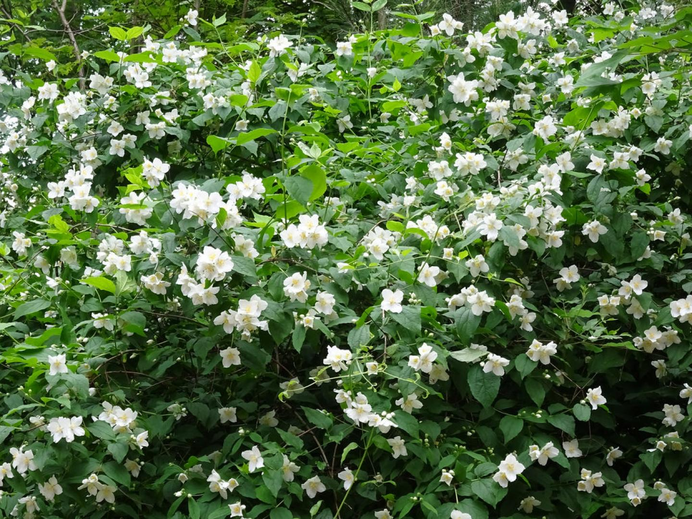

Ayuntamiento de Senés
JARDIN BOTANICO DE ESPECIES AUTOCTONAS DE SENES

Echinops strigosus

El cilindro (Echinops strigosus) es una planta herbácea perenne característica de zonas secas del ámbito mediterráneo. Se distingue por su porte erguido y por sus llamativas inflorescencias esféricas, que le confieren un gran valor ornamental.
Puede alcanzar entre 50 cm y 1,5 metros de altura, con tallos rígidos y hojas profundamente divididas, a menudo con bordes espinosos. Sus flores se agrupan en cabezuelas redondeadas de color azulado o violáceo, muy características.
El cilindro es propio de regiones mediterráneas, donde crece en terrenos abiertos, secos y soleados, como laderas, campos abandonados y bordes de caminos.
En la Sierra de los Filabres, aparece en zonas áridas y pedregosas, formando parte de la vegetación adaptada a condiciones de escasez hídrica.
El cilindro ha sido utilizado tradicionalmente en medicina popular por sus posibles propiedades digestivas y antiinflamatorias, aunque su uso es menos frecuente que el de otras especies.
También presenta interés ecológico, ya que sus flores atraen a numerosos insectos polinizadores.
El cilindro simboliza la singularidad y la resistencia, debido a su forma característica y su capacidad para desarrollarse en ambientes secos.
Su estructura esférica representa equilibrio y armonía dentro del paisaje natural.
En Senés, el cilindro, se usaba como flor ornamental. Uno de sus usos tradicionales era decorar la virgen en la iglesia el día del señor.
El cilindro florece en verano, produciendo inflorescencias esféricas de color azul o violáceo que destacan sobre la vegetación circundante.
Las flores del cilindro son especialmente atractivas para abejas y otros polinizadores, lo que lo convierte en una planta importante para la biodiversidad.
Su forma esférica es poco común entre las plantas mediterráneas, lo que le da un carácter muy distintivo en el paisaje.